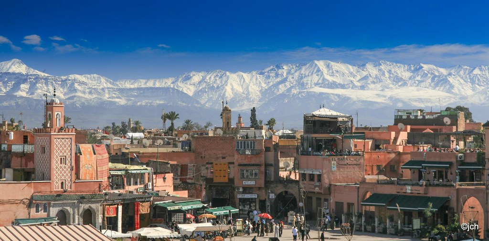
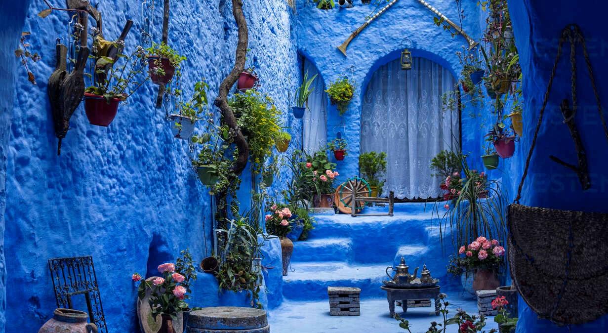
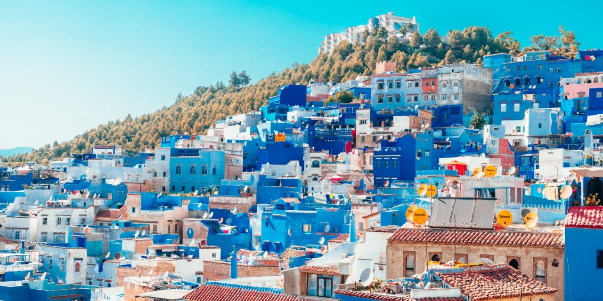
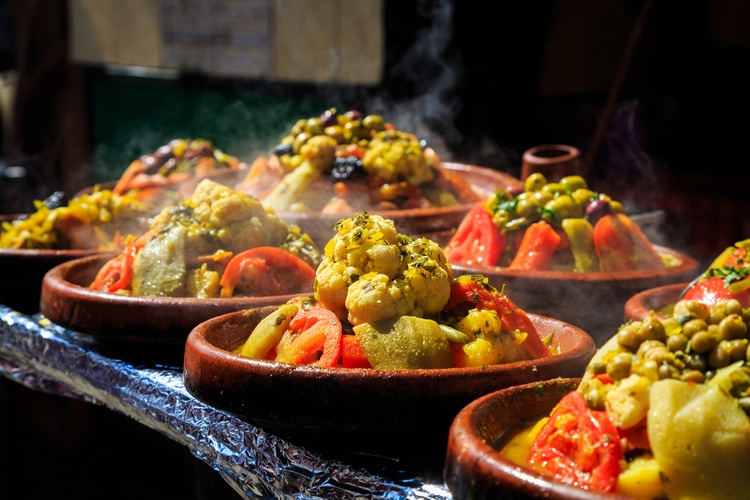
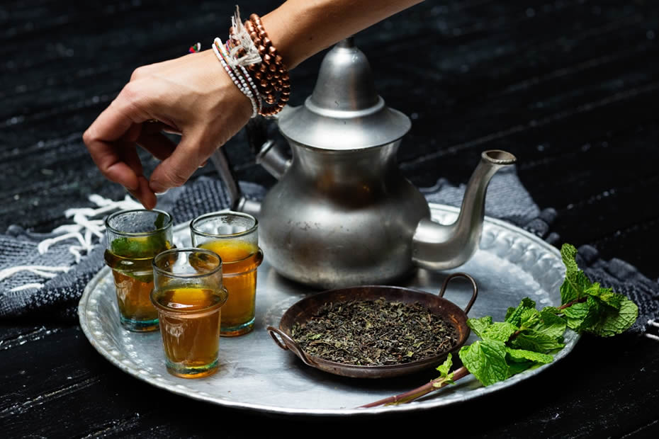

So many beautifull cities to visit
  Morocco is a country beautifully surrounded by mountains. The three Atlas Mountains and the
Rif show
marvellous rugged landscapes but they also make authentic playgrounds for thrill seekers
!
Discover exciting outdoors activities : Mountain biking, rafting, skiing, accrobranche, mountain
biking
and even lazing around !
Splendour has an address ! Admire the stunning landscapes surrounding you and go exploring the small
treasures awaiting for you.
Food & Drinks
 
Morocco's culinary heritage embraces the deep-rooted traditions and cultural variety of the country. Couscous, Tajine, Pastilla, Mrouzia, and R'fissa, are some of the emblematic dishes of the country that you can’t resist. Subtly composed of a wide variety of striking flavours and scents, Moroccan cuisine draws its originality from a combination between Berber, Arab-Andalusian, and Jewish culinary traditions. Thanks to its rich cultural heritage specific to each region, Morocco has built an undisputed reputation worldwide.